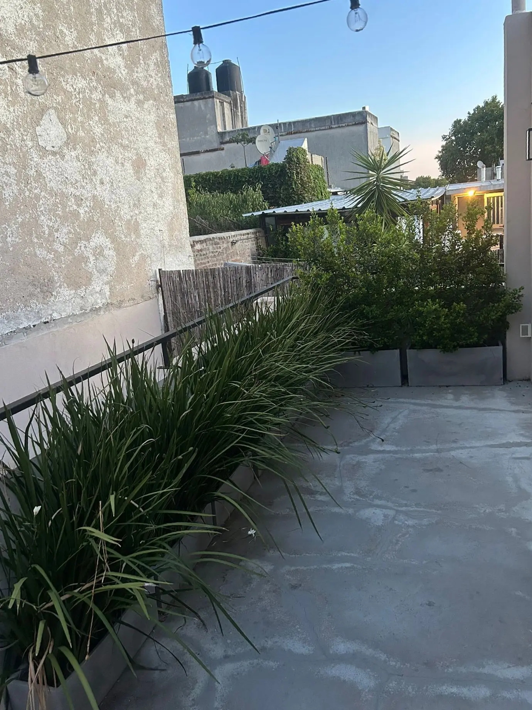
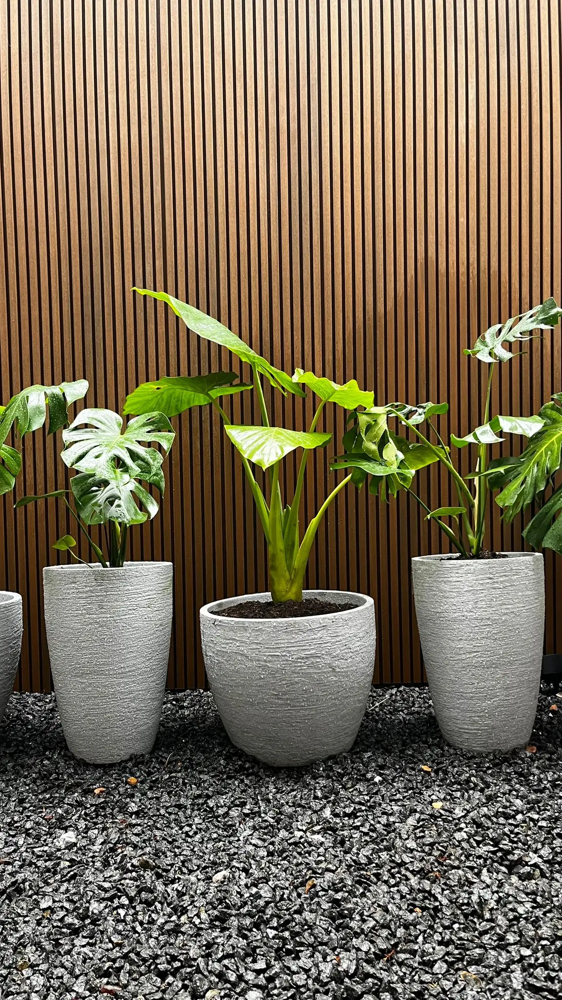
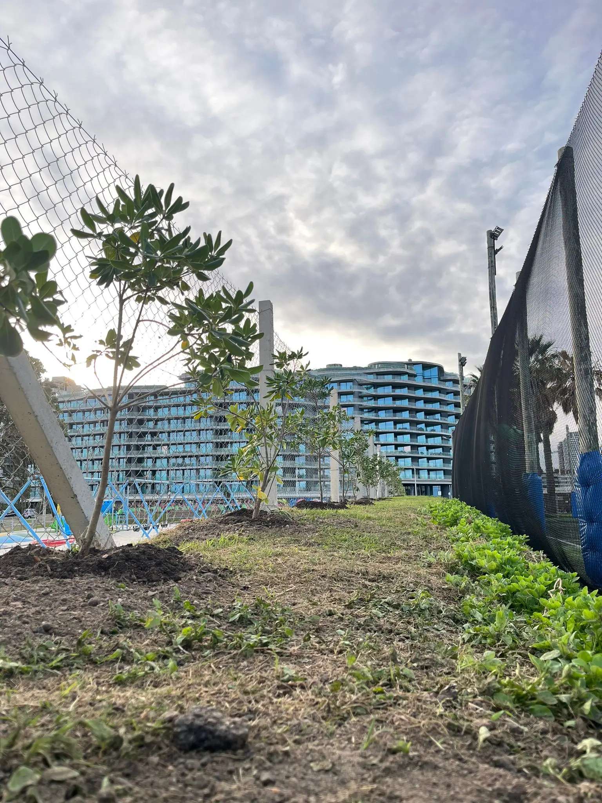

Trabajos
Espacios intervenidos
Adaptamos cada propuesta al entorno, jardines verticales, mantenimiento de hogares y empresas, ejecuciones de proyectos desde el inicio.
Balcones urbanos
Verde en pocos metros.
Composiciones teniendo en cuenta funcionalidad, accesibilidad y el espacio a habitar.
- Selección detallada de especies
- Riego por goteo
- Mantenimiento y supervisión

Terrazas y azoteas
Diseños pensados para generar confort
Propuestas que generan impacto mediante la agrupación de especies.
- Composición por zona
- Vegetación de bajo mantenimiento
- Variedad de macetas
Patios residenciales
Espacios para habitar
Diseñamos pensando el uso real del lugar.
- Orden circulación y estaciones
- Atmósfera, texturas, clima y suelo
- Un jardín para todas las estaciones del año
Jardines de mayor escala
Estructura vegetal y coherencia
Proyectos donde el diseño se sostiene: capas, recorridos, especies principales y evolución estacional.
- Relevamiento
- Ante proyecto
- Ejecución de proyecto
- Seguimiento de jardín



Locales comerciales
Verde como identidad y experiencia
Interiores y exteriores verdes pensados para cada marca.
- Propuesta alineada con la identidad del local
- Durabilidad de especies y mantenimiento
- Mantenimiento y reposiciones de ejemplares
Contacto
¿Querés una propuesta para tu espacio?
Coordinemos una consulta y definimos un camino claro: diseño, instalación y seguimiento.